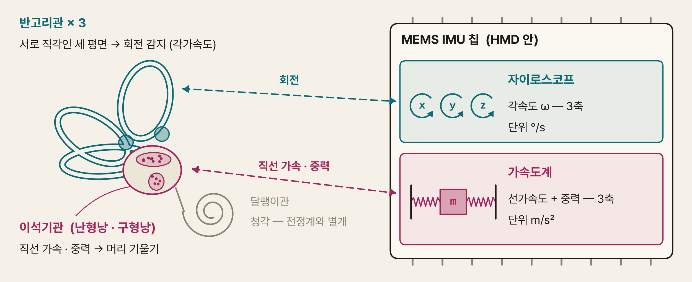

애니메이션 시스템(Animator, Timeline)과 물리 엔진 기초(Rigidbody, Collider)
선형·이징·베지어 보간값과 오일러·세미암시적·베를레 적분 한 스텝을 숫자로 직접 계산 → 어느 쪽이 왜 틀리는지 설명
AI 이동 코드에서 transform.position 대입을 찾아 벽 통과·떨림의 원인을 설명 → linearVelocity · MovePosition · CCD 로 수정
카메라 이동 설계를 보고 광학 흐름 · 가속 · 시야각 기준으로 멀미 위험을 미리 판정 → 12주 컴포트 설계의 근거로 사용
오늘의 큰 그림 : 화면 속 움직임 = 정해 둔 움직임(애니메이션) + 규칙으로 계산한 움직임(물리) → 둘 다 사람 몸이 «진짜 움직임» 으로 오해할 수 있음
| 질문 | 답에 들어가야 할 개념 |
|---|---|
| Generate Mip Maps 를 끈 바닥이 멀리서 반짝이는 이유는? | 픽셀 하나에 텍셀 여러 개 → 그중 하나만 샘플 → 프레임마다 다른 텍셀 → 앨리어싱 |
| 반투명 유리 두 장의 앞뒤가 뒤바뀌어 보이는 이유는? | 반투명은 깊이 버퍼에 안 씀 → 그리는 순서로 결과 결정 → 물체 단위 정렬의 한계 |
| 나뭇잎을 Transparent 대신 무엇으로 바꾸면 정렬 문제가 사라지나? | Alpha Clip (잘라내기) → 불투명처럼 깊이 기록 |
지난 주의 공통 실수 : «밉맵 켜 줘» 만 쓰고 검증 조건(어느 거리에서 무엇이 안 보여야 하는지) 누락 → AI 결과가 맞는지 판정 불가
차이 = 개념 단어를 아는가 · 오늘도 같은 구조 : «벽 통과 금지» 를 측정 가능한 검증 조건으로 쓰기
사람이 시간표를 미리 작성 → 엔진은 그대로 재생 · 결과 항상 동일
예 : 문 열림 · 캐릭터 걷기 · 컷신
사람은 질량·힘·모양만 지정 → 엔진이 0.02초마다 다음 위치 계산 · 부딪히면 반응
예 : 굴러가는 공 · 쌓인 상자 붕괴
안무 vs 공 던지기 : 춤은 동작 순서를 외워 그대로 재현(애니메이션) · 던진 공은 아무도 경로를 외우지 않음 → 힘과 중력이 매 순간 경로를 결정(물리)
비유의 한계 : 게임에서는 둘을 섞음 — 걷는 동작은 애니메이션, 넘어지는 몸은 물리(래그돌)
키프레임 보간 · 스켈레톤 · 수치 적분 · 충돌 판정
«이 시각에는 이 값» 이라고 사람이 직접 찍어 둔 기준점 — 만화의 원화 한 장
문 회전 0초 = 0° · 1초 = 90° → 키 2개로 1초짜리 문 열림 완성
키 사이는 컴퓨터가 채움 → 키가 너무 적으면 원하는 동작이 안 나오고, 너무 많으면 수정이 어려움
Unity : Window → Animation → Animation 창 · 빨간 녹화 버튼 · 시간 막대 위 마름모 표시
두 키프레임 사이의 값을 계산으로 채우는 일 — 원화 사이에 동화 그려 넣기
0° 키와 90° 키 사이 0.5초 지점 → 직선으로 이으면 45°
같은 키라도 잇는 방식에 따라 기계적 · 부드러움 · 탄력으로 느낌이 갈림
Animation 창 하단 Curves 탭의 곡선 모양 = 보간 결과
출발·도착 근처에서 속도를 줄여 «부드럽게» 만드는 보간 방식 — 살살 출발하는 버스
문 열림 0.25초 시점 : 직선 22.5° vs 이징 약 14°
없으면 출발·정지 순간 «쿵» → 로봇 같은 움직임 · 단 VR 카메라엔 오히려 해로움 (Part II)
Unity 키 우클릭 → Flat · Figma · After Effects 의 Ease In/Out · CSS ease-in-out
키프레임에서 곡선이 출발하는 기울기 = 그 순간의 속도 — 비탈길의 경사
접선 0 = 키에서 멈춘 상태 · 접선 20 = 키에서 초당 20 씩 변하며 출발
모르면 «키마다 멈칫» 하는 움직임의 원인(전부 Flat 접선)을 못 찾음
Curves 탭에서 키 선택 시 양쪽 핸들 · 우클릭 → Free Smooth · Broken
캐릭터 속 뼈대 — 어깨 → 위팔 → 아래팔 → 손처럼 부모-자식으로 이어진 Transform 줄
어깨를 30° 돌리면 위팔·아래팔·손이 함께 30° 돌아감 (2주차 변환 체인)
정점 수만 개 대신 뼈 수십 개만 움직이면 됨 → 캐릭터 애니메이션이 가능한 이유
Hierarchy 에서 캐릭터를 펼치면 보이는 Hips · Spine · LeftUpperArm … 오브젝트
뼈가 움직일 때 피부(메시 정점)가 따라 움직이게 하는 계산 — 철사 인형 위에 씌운 천
팔꿈치 정점 = 위팔 결과 50% + 아래팔 결과 50% 를 섞어 위치 결정
섞는 방식 때문에 관절을 크게 꺾으면 부피가 줄어 쭈그러짐 (뒤 손계산 0.71)
Skinned Mesh Renderer 컴포넌트 · Project Settings → Quality → Skin Weights
여러 동작(걷기·뛰기)을 비율로 섞어 중간 동작을 만드는 장치 — DJ 크로스페이더
Speed 3.0 → 걷기 57% + 뛰기 43% = «빠른 걸음» 자동 생성
없으면 속도마다 동작을 따로 만들어야 함 · 전환 순간 동작이 툭 끊김
Animator 창 빈 곳 우클릭 → Create State → From New Blend Tree
여러 물체의 움직임·소리·카메라를 하나의 시간표에 배치하는 Unity 도구 — 영상 편집기 트랙
0초 조명 켜짐 → 2초 문 열림 → 3초 안내 음성 = 전시 오프닝 한 편
카메라(사용자 시점) 트랙 = 사용자 의사와 무관한 이동 → VR 멀미 원인
Window → Sequencing → Timeline · Playable Director 컴포넌트
애니메이션 스튜디오의 원화와 동화 : 원화가(선임)는 동작의 핵심 장면 몇 장만 그림 · 동화가가 그 사이 장면을 채움 → 컴퓨터 애니메이션에서 원화 = 키프레임 · 동화가 = 보간 계산
1초 = 60프레임 · 사람이 찍는 키 = 보통 2~5개 → 나머지 55개 이상을 컴퓨터가 계산
보간 방식에 따라 같은 키프레임에서 전혀 다른 느낌 → 기계적 · 부드러움 · 탄력
핵심 질문 : 키와 키 사이를 어떤 곡선으로 이을 것인가
→ 직선 · 이징 곡선 · 에르미트 · 베지어
Unity : Animation 창에서 키 찍기 → 곡선은 Curves 탭 · 결과물 = Animation Clip (움직임 한 편을 담은 파일)
a : 시작값 · b : 끝값 · t : 진행률 (0 = 시작, 1 = 끝)
손계산 — 문이 0° 에서 90° 로 1초 동안 열림
0.3초 : \(0.7 \times 0 + 0.3 \times 90 = 27°\)
0.5초 : \(45°\) · 1초 : \(90°\)
문제 : 속도가 처음부터 끝까지 초당 90° 로 일정 → 출발 순간 0 → 90°/s 로 순간 점프 · 도착 순간 90 → 0 으로 급정지
최고 속도로 출발해 벽에 박혀 서는 엘리베이터 : 층수(위치)는 정확히 맞음 · 탄 사람은 출발·정지 때 쿵 → 위치만 맞고 속도가 끊긴 움직임 = 기계적·로봇 같은 느낌
Unity Vector3.Lerp(a, b, t) · Mathf.Lerp 가 이 식 그대로
이 \(s\) 를 선형 보간의 \(t\) 자리에 넣으면 끝 · \(p = (1-s)\,a + s\,b\)
| t | 계산 | s (진행률) | 선형이면 |
|---|---|---|---|
| 0.25 | \(3(0.0625) - 2(0.0156)\) | 0.156 | 0.25 |
| 0.5 | \(0.75 - 0.25\) | 0.5 | 0.5 |
| 0.75 | \(1.6875 - 0.8438\) | 0.844 | 0.75 |
속도 확인 (기울기) : \(s'(t) = 6t - 6t^{2}\)
t = 0 → 0 · t = 0.5 → 1.5 · t = 1 → 0
→ 출발·도착 속도 0 · 가운데에서 평균의 1.5배
숙련된 버스 기사 : 출발할 때 살살 · 중간에 속도를 내고 · 정류장 앞에서 미리 줄여 멈춤 → 걸린 시간은 같아도 승객이 휘청이지 않음
문 0° → 90° 예 : 0.25초 시점 선형 22.5° vs 이징 약 14° → 처음엔 덜 열리고, 가운데서 따라잡음
\(p_0, p_1\) : 두 키의 값 · \(m_0, m_1\) : 두 키의 접선 (그 순간의 속도) · \(h\) : t 로 정해지는 섞는 비율 4개
t = 0.5 에서의 비율 : \(h_{00}=0.5,\ h_{10}=0.125,\ h_{01}=0.5,\ h_{11}=-0.125\)
손계산 — 0 → 10 이동
① 접선 둘 다 0 : \(0.5{\times}0 + 0.5{\times}10 = 5\) → smoothstep 과 동일
② 출발 접선 \(m_0 = 20\) : \(5 + 0.125{\times}20 = 7.5\) → 처음에 세게 튀어 나감
Unity Animation 창의 곡선 = 에르미트
키 우클릭 → Flat (접선 0 = 이즈 인·아웃) · Linear · Constant (계단) · Free Smooth · Broken (좌우 접선 분리)
일러스트레이터·피그마 펜 툴 : 점 2개 사이 곡선을 핸들 2개로 휘게 함 · 핸들 = 곡선을 끌어당기는 자석 → 그 수학이 3차 베지어
손계산 t = 0.5 → 비율 \(\tfrac18,\tfrac38,\tfrac38,\tfrac18\)
\(P = 0, 6, 10, 10\) : \(0 + 2.25 + 3.75 + 1.25 = 7.25\)
에르미트와 같은 곡선의 다른 표기
\(P_1 = p_0 + m_0/3\) · \(P_2 = p_1 - m_1/3\)
→ 핸들 길이 = 접선(속도)의 1/3
CSS ease-in-out = cubic-bezier(0.42, 0, 0.58, 1) → 웹 디자인에서 쓰던 그 곡선 · Unity 키의 Weighted 옵션 = 핸들 길이까지 조절
캐릭터 정점 수만~수십만 개 → 정점마다 키프레임 = 불가능
→ 뼈 수십 개에만 회전 키프레임 → 피부는 뼈를 따라 계산
뼈 = 부모-자식 Transform 계층 (2주차 변환 체인)
어깨 회전 → 위팔·아래팔·손 전부 따라 회전
철사 뼈대 인형 : 철사(뼈)를 구부리면 덮어 씌운 천(피부)이 따라 구부러짐 · 천의 실 한 올 한 올을 따로 움직일 필요 없음
비유의 한계 : 실제 천은 물리적으로 늘어나지만, 스키닝은 «어느 뼈를 몇 % 따를지» 숫자로만 결정
관련 Unity 부품 · 용어 → 다음 장 «용어 풀이»
뼈를 따라 정점을 움직여 그리는 Unity 컴포넌트 — 보통 Mesh Renderer 의 «뼈 따라가는» 버전
FBX 캐릭터를 씬에 넣으면 몸 메시 오브젝트에 자동으로 붙음 · Root Bone · Bones 목록 보유
일반 Mesh Renderer 로 바꾸면 뼈가 움직여도 몸은 굳은 채 제자리
캐릭터의 몸 메시 오브젝트 Inspector
정점 하나가 각 뼈를 «몇 % 따라갈지» 적어 둔 숫자 · 합은 항상 100%
팔꿈치 정점 = 위팔 0.5 + 아래팔 0.5 · 손등 정점 = 손 1.0
잘못 칠하면 팔을 들 때 옆구리 살이 같이 끌려 올라감
Blender Weight Paint 모드에서 칠함 · Unity 는 Quality → Skin Weights 로 정점당 뼈 수 제한
캐릭터 뼈 이름을 Unity 표준 인체 지도(엉덩이·척추·팔·다리)에 대응시킨 연결표
내 캐릭터의 «mixamorig:LeftArm» → 표준 칸 «Left Upper Arm» 에 연결
체형이 다른 캐릭터에 동작을 옮겨 입힘 = 리타기팅 (Mixamo 춤 → 내 캐릭터)
모델 Import Settings → Rig 탭 → Animation Type = Humanoid → Configure
\(w_i\) : 뼈 i 를 따르는 비율 (가중치) · \(M_i\) : 뼈 i 의 이동·회전 · 결과 = 뼈별 결과의 가중 평균
팔꿈치 정점 v = (1, 0) · 위팔 50% · 아래팔 50%
위팔 : 그대로 → (1, 0)
아래팔 : 90° 굽힘 → (0, 1)
평균 : (0.5, 0.5) → 원점까지 거리 \(\sqrt{0.5}\approx 0.71\)
두 친구의 중간 지점 : 나에게서 동쪽 1 km 친구와 북쪽 1 km 친구 → 두 위치의 평균 = 나에게서 약 0.71 km · 둘 다 1 km 인데 평균은 안쪽 → 각도가 아닌 위치를 섞어서 생기는 문제
원래 거리 1 → 0.71 : 관절 부피 29% 손실
팔꿈치·손목을 크게 꺾으면 고무관처럼 쭈그러짐 · 비틀면 사탕 포장지처럼 꼬임
보완 : 관절 주변 정점 추가 · 가중치 조정 · 보정용 보조 뼈 · Quality 설정의 Skin Weights (정점당 뼈 1·2·4개 · 많을수록 비쌈)
| 부품 | 한 줄 뜻 |
|---|---|
| State 상태 | 지금 재생 중인 동작 하나 (Idle · Walk · Jump) |
| Transition 전이 | 상태 → 상태 화살표 · 넘어가는 동안 두 동작을 섞음 |
| Parameter | 코드가 넣어 주는 신호 — Float · Int · Bool · Trigger |
| Has Exit Time | 켜면 동작이 끝날 때까지 기다린 뒤 전이 |
자세한 풀이 → 다음 두 장
지하철 노선도 : 역 = 상태 · 선로 = 전이 · 신호등 = 파라미터 조건 → 선로가 없는 역으로는 바로 못 감 (Idle 에서 Jump 로 가는 화살표가 없으면 점프 불가)
animator.SetFloat("Speed", 3f);
animator.SetTrigger("Jump");이 구조의 이름 = 상태 기계 (State machine : 한 번에 한 상태만 활성 · 조건으로 전환) — 10주차 인터랙션 설계에서 재등장
지금 재생 중인 동작 하나 — 노선도의 역 하나
Idle(가만히) · Walk · Jump 가 각각 상자 하나 · 한 번에 하나만 켜짐
상태의 Motion 칸에 클립을 연결하지 않으면 그 상태에선 아무 동작도 안 나옴
Animator 창 (Window → Animation → Animator) 의 상자 · 기본 상태는 주황색
상태에서 상태로 넘어가는 화살표 · 넘어가는 동안 두 동작을 잠깐 섞음
Idle → Walk 화살표 · Transition Duration 0.25 = 0.25초 동안 섞으며 바뀜
화살표가 없으면 그 동작으로 절대 못 감 · 섞는 시간이 길면 반응이 굼뜸
상태 우클릭 → Make Transition · 화살표 선택 → Inspector 의 Conditions
코드가 Animator 에 넣어 주는 신호 — Float(소수) · Int(정수) · Bool(참/거짓) · Trigger(한 번 누름)
SetFloat("Speed", 3f) → «Speed > 0.1 이면 Walk 로» 조건 충족
코드의 이름과 Animator 쪽 이름이 한 글자만 달라도 동작 안 함 (Console 에 경고만)
Animator 창 왼쪽 위 Parameters 탭 → + 버튼
켜면 현재 동작이 정해진 지점까지 재생된 뒤에야 전이 — 지금 곡이 끝나야 다음 곡을 트는 DJ
Exit Time 0.9 = 동작의 90% 재생 후 전환 → 1초짜리 동작이면 최대 약 0.9초 대기
«점프 버튼 반응이 늦다» 의 흔한 원인 → 즉시 반응해야 하는 전이는 끔
전이 화살표 선택 → Inspector → Has Exit Time 체크 · Settings 펼침의 Exit Time
한 번에 한 상태만 켜져 있고, 조건이 맞을 때만 다른 상태로 넘어가는 구조
신호등 : 초록 → 노랑 → 빨강 · 두 색이 동시에 켜지는 일 없음
10주차 인터랙션(문 잠김·열림, 화면 전환)도 같은 구조로 설계 → 엉킨 조건문 방지
Animator Controller 전체 · 코드에서는 enum + switch 로도 구현
움직임 한 편을 담은 파일 — 키프레임과 곡선 묶음
Door_Open.anim (1초 · 키 2개) · FBX 안에 함께 들어 있는 Walk 클립
Loop Time 을 안 켜면 걷기가 한 번만 재생되고 멈춤
Project 창의 .anim 파일 · 클립 Inspector 의 Loop Time · Animation 창 왼쪽 위 클립 목록
1D 블렌드 트리 (파라미터 Speed 하나)
Idle = 0 · Walk = 1.5 · Run = 5.0 (m/s 기준값)
손계산 — Speed = 3.0 → Walk 와 Run 사이
Run 비율 = \(\dfrac{3.0 - 1.5}{5.0 - 1.5} = \dfrac{1.5}{3.5} \approx 0.43\)
Walk 비율 = \(1 - 0.43 = 0.57\)
→ 걷기 57% + 뛰기 43% 를 섞은 «빠른 걸음» 자동 생성
DJ 믹서의 크로스페이더 : 왼쪽 곡(걷기)과 오른쪽 곡(뛰기)을 슬라이더 위치만큼 섞음 · 슬라이더 = Speed 파라미터
비유의 한계 : 음악은 소리를 더하지만 동작은 뼈 회전을 섞음 → 발 디딤 타이밍이 다른 두 동작을 섞으면 발이 미끄러짐 → 동작 길이·박자 맞춤 필요
2D 블렌드 트리 : 앞뒤·좌우 속도 2개로 8방향 이동 동작 섞기
영상 편집 프로그램의 타임라인 (프리미어·다빈치) : 트랙마다 클립을 배치 → 재생 헤드가 지나가며 순서대로 실행 · Unity Timeline 도 같은 화면 구성
| Animator | Timeline | |
|---|---|---|
| 성격 | 반응형 — 입력·상황에 따라 다음 동작 결정 | 연출형 — 정해진 시각에 정해진 일 |
| 예 | 플레이어 걷기·점프 | 컷신 · 튜토리얼 안내 · 전시 오프닝 |
| 구성 | Animator Controller (상태 기계) | Timeline 에셋 + Playable Director 컴포넌트 · 트랙 : Animation · Activation · Audio · Signal · Control |
VR 주의 : Timeline 으로 카메라(사용자 시점)를 움직이는 연출 = 사용자 의사와 무관한 시점 이동 → Part II 에서 다룰 멀미의 대표 원인
Update 시계) · 물리 = 0.02초마다 (FixedUpdate 시계, 3주차)박자가 다른 두 드러머 : 한 명은 90 BPM(화면), 한 명은 50 BPM(물리) → 같은 곡을 쳐도 박이 엇갈림 → 한쪽 박자에 맞추게 하면 해결
오늘의 연결고리 : «누가 위치를 정하는가» — 애니메이션 · 물리 · 스크립트가 같은 물체의 위치를 동시에 건드리면 충돌 → 함정 #6 의 뿌리
힘을 받아도 모양이 변하지 않는다고 가정한 물체 — 위치·회전만 바뀌는 쇳덩이
바닥에 떨어진 상자 : 굴러가고 튕기지만 찌그러지지는 않음
찌그러짐을 빼서 계산이 빠름 → 천·젤리처럼 휘는 물체는 별도 기법 필요
Unity 기본 3D 물리(PhysX) = 강체 · 천은 Cloth 컴포넌트
물체를 물리 엔진의 관리 대상으로 등록하는 Unity 컴포넌트 — 물리 엔진 출석부에 이름 올리기
큐브에 추가 후 Play → 바로 중력으로 떨어짐 · Mass 1 = 1 kg
없으면 Collider 가 있어도 «움직이지 않는 벽» 취급 → 힘·속도 개념 자체가 없음
Add Component → Physics → Rigidbody · Mass · Linear Damping · Is Kinematic
충돌 판정용 보이지 않는 모양 — 옷 속 보호대
사람 = Capsule 1개 · 벽·상자 = Box · 공 = Sphere
겉모습(메시)과 무관하게 Collider 모양으로만 부딪힘 → 없으면 바닥을 뚫고 추락
Add Component → Physics → Box · Sphere · Capsule · Mesh Collider · Scene 뷰의 초록 선
«속도 × 짧은 시간» 을 계속 더해 다음 위치를 구하는 계산 — 배의 추측항법
위치 0 m · 속도 5 m/s → 0.02초 뒤 0 + 5 × 0.02 = 0.1 m
매 스텝 조금씩 오차 → 순서를 잘못 짜면 흔들림이 점점 커져 폭발
엔진 내부에서 자동 · AI 에게 «물리 직접 구현» 을 시키면 코드에 등장
물리 계산 한 번의 간격 — 메트로놈 박자
Unity 기본 0.02초 = 초당 50번 · 90Hz 화면에 맞추면 1/90 ≈ 0.0111초
크면 벽 통과·적분 오차 증가 · 작으면 물리 계산량 증가
Project Settings → Time → Fixed Timestep · 코드 Time.fixedDeltaTime
빠른 물체가 한 스텝 사이에 얇은 벽을 건너뛰는 현상 — 개울보다 큰 보폭의 징검다리
30 m/s × 0.02초 = 한 번에 0.6 m 순간이동 → 벽 0.2 m + 공 0.2 m 를 통째로 건너뜀
시작 위치에 따라 됐다 안 됐다 하는 «운에 맡긴 버그» → 한 번 테스트로는 못 찾음
던진 물체 · 총알 · 대시 이동 · 빠르게 휘두른 컨트롤러
도착 자리만 보지 않고 이동 «경로 전체» 를 검사하는 연속 충돌 판정
같은 30 m/s 공도 CCD 를 켜면 벽 앞에서 정지 (터널링 실험실)
모든 물체에 켜면 계산 비용 증가 → 빠른 물체에만 선택적으로
Rigidbody → Collision Detection → Continuous · Continuous Dynamic · Continuous Speculative
후보를 대충 거르는 단계(광역) → 후보만 정확히 검사하는 단계(정밀) — 공항 문형 탐지기 → 몸수색
물체 1,000개 = 499,500쌍 → 광역에서 대부분 탈락 · 소수 후보만 정밀 검사
전부 정밀 검사하면 0.02초 안에 못 끝남 → 물체가 많을수록 프레임 저하
Project Settings → Physics → Broadphase Type (메뉴 위치는 버전마다 다름)
| # | 단계 | 계산 |
|---|---|---|
| 1 | 힘 모으기 | 중력 + AddForce + 마찰 |
| 2 | 가속도 | \(a = F / m\) (뉴턴 2법칙) |
| 3 | 속도 갱신 | \(v \leftarrow v + a\,\Delta t\) |
| 4 | 위치 갱신 | \(x \leftarrow x + v\,\Delta t\) |
| 5 | 충돌 검사·해결 | 겹친 물체 밀어내기 · 속도 반사 |
배의 추측항법 : GPS 없던 시절 항해사는 «지금 속도 × 지난 시간» 으로 현재 위치를 지도에 찍음 → 30분마다 반복 · 물리 엔진도 0.02초마다 같은 일
비유의 한계 : 항해사는 등대를 보고 오차를 바로잡지만, 물리 엔진은 바로잡을 «정답» 이 없음 → 오차 누적
핵심 : 물리 엔진은 위치를 직접 정하지 않음 → 속도를 정하면 위치는 따라옴 · 그래서 위치를 사람이 덮어쓰면 엔진의 계산 사슬이 끊김 (함정 #6 예고)
| Rigidbody 속성 · Unity 6 | 뜻 |
|---|---|
| Mass | 질량 (kg) · 같은 힘에 덜 가속 |
| Linear Damping | 공기 저항 같은 감속 (구 이름 Drag) |
| Use Gravity | 중력 적용 |
| Is Kinematic | 힘·충돌에 안 밀림 · 코드로만 이동 (엘리베이터·문) |
| Interpolate | 물리 스텝 사이 화면 위치 보간 (뒤에서) |
| Collision Detection | Discrete · Continuous 계열 (뒤에서) |
| Collider | 비용 | 용도 |
|---|---|---|
| Sphere | 최저 | 공 · 대략적 물체 |
| Capsule | 낮음 | 사람·캐릭터 |
| Box | 낮음 | 벽 · 상자 |
| Mesh | 높음 | 복잡한 정적 지형 · 움직이는 물체엔 Convex 필수 |
Collider 만 = 움직이지 않는 벽 · Rigidbody + Collider = 움직이며 부딪히는 물체
옷 속의 보호대 : 겉모습(메시)은 복잡해도 실제로 부딪히는 건 단순한 보호대(Collider) → 단순할수록 계산이 빠름
실제 물리 : 시간이 끊김 없이 흐름 · 속도가 매 순간 변함
컴퓨터 : 0.02초 간격으로만 계산 → 그 사이엔 «속도가 일정했다» 고 가정
n : 몇 번째 스텝 · Δt : 스텝 간격 (0.02초)
안개 낀 비탈길을 눈 감고 걷기 : 지금 발밑의 기울기만 느끼고 한 걸음 → 다시 느끼고 한 걸음 · 보폭(Δt)이 크면 길이 휜 곳에서 점점 길 밖으로 벗어남
문제 : 그 «일정했다» 는 가정이 매 스텝 조금씩 틀림 → 오차가 쌓임
→ 어떤 순서로 속도·위치를 갱신하느냐에 따라 오차의 성질이 달라짐
| 이름 | 계산 순서 | 성질 |
|---|---|---|
| 오일러 Explicit Euler | \(x_{n+1} = x_n + v_n\Delta t\) \(v_{n+1} = v_n + a_n\Delta t\) → 옛 속도로 위치 이동 | 가장 단순 · 회전·진동에서 에너지가 계속 늘어남 → 궤도가 바깥으로 나선 |
| 세미암시적 오일러 Semi-implicit Euler | \(v_{n+1} = v_n + a_n\Delta t\) \(x_{n+1} = x_n + v_{n+1}\Delta t\) → 새 속도로 위치 이동 | 계산량 같음 · 에너지 오차가 쌓이지 않고 출렁임 · 게임 물리 엔진의 표준 |
| 베를레 Verlet | \(x_{n+1} = 2x_n - x_{n-1} + a_n\Delta t^{2}\) → 속도 대신 직전 두 위치 사용 | 안정적 · 천·밧줄·입자 시뮬레이션에 자주 사용 |
차이는 두 줄의 순서뿐 · AI 에게 «물리 직접 구현» 을 시키면 오일러로 짜는 경우 존재 → 어떤 적분기인지 확인 필요
Unity 3D 물리(PhysX)는 세미암시적 오일러 계열 — 세부 구현은 엔진·버전마다 다름
상황 : 용수철에 매단 추 · 진폭 1 · 마찰 없음 → 정답 = 영원히 진폭 1 로 진동
오일러 (Δt = 0.1) : 한 스텝마다 에너지 × \((1 + \Delta t^{2})\) = × 1.01
진폭은 그 제곱근 → 스텝마다 약 × 1.005
10초 = 100스텝 : \(1.005^{100} \approx 1.65\)
→ 아무도 밀지 않았는데 진폭 65% 증가
세미암시적 : 같은 조건에서 진폭이 1 근처에서 출렁일 뿐 · 늘어나지 않음
그네 밀기 : 그네가 이미 올라가는 중인데 «한 박자 전 속도» 를 보고 계속 밀어 줌 → 밀 때마다 조금씩 더 높이 · 오일러 = 늘 한 박자 늦은 정보로 미는 사람
게임에서 보이는 증상 : 흔들리는 물체가 점점 크게 흔들림 · 궤도 도는 물체가 점점 멀어짐 · 결국 폭발하듯 튕겨 나감
메트로놈 (3주차) : 물리는 fps 와 무관하게 0.02초 박자 → 어느 PC 에서나 같은 결과 (가변 Δt 면 PC 성능 따라 점프 높이가 달라짐) · 대가 = 화면 박자와 엇갈림
손계산 : 공 위치 이전 스텝 1.00 m · 현재 스텝 1.10 m
남은 시간 13.3 ms ÷ 20 ms → \(\alpha \approx 0.67\)
화면 위치 = \(0.33{\times}1.00 + 0.67{\times}1.10 \approx 1.067\) m
→ 매 화면 프레임마다 조금씩 이동 · 덜컥거림 소멸
5초마다 갱신되는 버스 위치 앱 : 점이 5초마다 툭툭 점프 · 좋은 앱은 마지막 두 위치 사이를 부드럽게 미끄러뜨려 그림 → 실제 버스보다 아주 조금 늦게 보이는 대가
| 해결책 | 설정 | 대가 |
|---|---|---|
| ① 보간 | Rigidbody Interpolate = Interpolate | 화면이 물리보다 최대 1스텝 늦음 (20 ms) |
| ② 물리 주기 = 화면 주기 | Fixed Timestep = 1/90 ≈ 0.0111 | 물리 계산량 약 1.8배 |
물체 n 개 → 가능한 쌍 \(\dfrac{n(n-1)}{2}\)
손계산 : 100개 → 4,950 쌍 · 1,000개 → 499,500 쌍
전부 정밀 검사 = 0.02초 안에 불가능
→ ① 광역 판정 : 겉 상자끼리 대충 겹치는지만 (아주 빠름) → 후보 쌍만 남김
→ ② 정밀 판정 : 후보 쌍만 실제 모양으로 정확히 검사
공항 보안 검색 : 모든 승객을 몸수색하지 않음 → 먼저 문형 탐지기를 통과(광역) → 삑 울린 사람만 정밀 검색(정밀) · 탐지기는 «혹시 모를» 사람을 넉넉히 걸러야 함 (놓치면 안 됨)
Unity : Project Settings → Physics → Broadphase Type (Sweep and Prune 등)
모든 축에서 «구간이 겹치면» 충돌 후보
A : x 0~2, y 0~2 · B : x 1.5~3, y 1~4
x : 0~2 와 1.5~3 → 겹침
y : 0~2 와 1~4 → 겹침
→ 후보 · 한 축이라도 안 겹치면 즉시 탈락
중심 거리 ≤ 반지름 합 → 충돌
A 중심 (0,0,0) r = 0.5 · B 중심 (0.6, 0.8, 0) r = 0.5
거리 \(\sqrt{0.36 + 0.64} = 1.0\) · 반지름 합 1.0
→ 정확히 맞닿음 · 0.1 더 가까우면 0.1 만큼 파고든 상태
도서관 책 찾기 (구역 나누기) : 모든 책장을 뒤지지 않고 «층 → 구역 → 서가 → 칸» 순서로 좁힘 · 물리 엔진도 공간을 상자 계층(BVH)·정렬 목록(Sweep and Prune)으로 나눠 후보를 빨리 찾음
물체를 감싸는, x·y·z 축에 나란한 가장 작은 상자 — 물건 크기에 맞춘 택배 상자
반지름 0.5 공 → 중심 ±0.5 의 1 × 1 × 1 상자 · 비스듬히 누운 막대는 상자가 훨씬 커짐
비교가 «구간 겹침» 숫자 비교뿐이라 아주 빠름 · 대신 실제보다 커서 거짓 후보 발생
이산 판정(Discrete) : 각 스텝의 도착 자리에서만 겹침 검사 → 그 사이 경로는 검사 안 함
손계산 : 공 속도 30 m/s · Δt 0.02초
한 스텝 이동 = \(30 \times 0.02 = 0.6\) m
벽 두께 0.2 m + 공 지름 0.2 m = 0.4 m
→ 0.6 > 0.4 → 앞 스텝은 벽 앞, 다음 스텝은 벽 뒤 가능
조건 : \(v\,\Delta t\) > 벽 두께 + 물체 크기
징검다리 건너기 : 보폭이 개울 폭보다 크면 물을 한 번도 밟지 않고 건넘 · 발이 땅에 닿는 순간(스텝)만 확인하는 심판은 «물에 빠진 적 없음» 판정
VR 에서 흔한 상황 : 손으로 던진 물체 · 빠르게 휘두른 컨트롤러 · 대시 이동 → 얇은 벽·바닥 통과
| 모드 | 검사 방식 | 비용 | 쓸 곳 |
|---|---|---|---|
| Discrete | 도착 자리만 | 최저 (기본값) | 느린 물체 대부분 |
| Continuous | 정적 Collider(벽·바닥)에 대해 경로 검사 | 중간 | 빠른 물체 vs 벽 |
| Continuous Dynamic | 정적 + 다른 Continuous 물체까지 경로 검사 | 높음 | 총알·던진 물체끼리 |
| Continuous Speculative | 다가오는 접촉을 미리 예측 · Kinematic 에도 동작 | 중간 | 빠르게 휘두르는 손·도구 |
판단 기준 = 앞 장의 부등식 : \(v\,\Delta t\) 가 «가장 얇은 벽 + 물체 크기» 보다 큰 물체만 Continuous 계열 → 전부 켜면 성능 낭비
Speculative 는 가까이 스쳐 지나갈 때 «유령 충돌» (닿지 않았는데 튕김) 가능 · 모드별 세부 동작은 Unity 버전 문서 확인
벽 통과 · 충돌 무시 · 떨림
// AI 가 흔히 내놓는 코드 (Rigidbody 가 붙은 공)
void Update() {
Vector3 dir = new Vector3(input.x, 0, input.y);
transform.position += dir * speed * Time.deltaTime; // ← deltaTime 까지 챙김
}3주차 함정 #2 (deltaTime) 는 통과한 코드 → «프레임 독립성은 맞는데 물리가 틀린» 두 번째 층의 함정
transform.position 대입 = 순간이동 · Rigidbody 의 속도(linearVelocity)는 0 그대로Update(화면 시계)에서 이동 → 물리 스텝(0.02초) 사이에 여러 번 순간이동 → 경로 검사(CCD)도 무의미체스 말을 손으로 집어 옮기기 : 판 위를 굴러가면 중간 말에 부딪힘 · 집어서 옮기면 중간에 무엇이 있든 그냥 내려놓음 → 물리 엔진 = 굴러가는 것만 이해하는 심판
| 시점 | 누가 | 공 위치 (벽 면 = 0) |
|---|---|---|
| 프레임 A | 스크립트 : +0.067 m 순간이동 | 벽 속 0.067 |
| 물리 스텝 | 엔진 : 겹침 해소 | 0 (밀려 나옴) |
| 프레임 B | 스크립트 : 다시 +0.067 | 벽 속 0.067 |
| … | 반복 | 0 ↔ 0.067 진동 |
손계산 : 속도 6 m/s · 90 fps → 프레임당 \(6 \div 90 \approx 0.067\) m 파고듦
닫히는 문에 계속 몸을 밀어 넣는 사람 : 문(물리)은 밀어내고 사람(스크립트)은 다시 들어감 → 문틈에서 들락날락
빠르면 더 심각 : 한 번에 공 반지름 이상 파고들면 엔진이 가까운 쪽 = 벽 뒤로 밀어냄 → 벽 통과
이미 겹쳐 버린 두 물체를 엔진이 가장 가까운 바깥쪽으로 밀어내는 처리
공이 벽에 0.067 m 파고듦 → 다음 물리 스텝에서 0.067 m 밀려 나옴
파고든 깊이가 크면 «가장 가까운 바깥» 이 벽 뒤 → 벽 통과로 이어짐
Project Settings → Physics → Default Max Depenetration Velocity (밀어내는 최대 속도)
| 확인 대상 | 방법 | 판정 |
|---|---|---|
| 위치 대입 코드 | 스크립트에서 transform.position · transform.Translate 검색 | Rigidbody 달린 물체에 있으면 의심 |
| 이동 함수 위치 | 이동 코드가 Update 인가 FixedUpdate 인가 | Rigidbody 이동은 FixedUpdate |
| 속도 값 | 실행 중 Inspector 에서 Rigidbody 의 속도 확인 (Info 펼침) | 움직이는데 0 → 순간이동 중 |
| 벽 통과 반복 측정 | 스타터 WallPassTest : 같은 속도로 20회 발사 | 통과 0회 가 기준 |
| Collision Detection | 빠른 물체의 모드 확인 | \(v\,\Delta t\) > 벽 + 크기 이면 Continuous 계열 |
한 번 해 보고 «안 뚫림» = 검증 아님 · 터널링은 시작 위치에 따라 확률적 → 반복 횟수와 통과 횟수를 숫자로
입력은 Update 에서 읽기 (키 누름을 놓치지 않게) · 물리 적용은 FixedUpdate 에서 — 3주차 실행 순서
| 방식 | 충돌 | 쓸 곳 | 주의 |
|---|---|---|---|
transform.position | 무시 | 물리 없는 연출 · UI · Collider 없는 장식 | Rigidbody 와 같이 쓰지 않기 |
| Animator · Timeline | Kinematic 이면 밀기만 | 정해진 움직임 | Update Mode = Fixed |
rb.linearVelocity · AddForce | 정상 | 부딪히고 막혀야 하는 물체 | FixedUpdate 에서 |
rb.MovePosition | 상대를 밀어냄 · 자기는 안 막힘 | Is Kinematic 물체 : 엘리베이터·문·발판 | 벽 통과 그대로 → 필요하면 SweepTest 로 사전 검사 |
CharacterController.Move | 벽에서 멈춤 | 1인칭·3인칭 플레이어 | Rigidbody 와 별개 방식 |
불도저 vs 자동차 : MovePosition(Kinematic) = 정해진 경로로 밀고 가는 불도저 → 앞의 상자는 밀리지만 불도저는 벽도 통과 · linearVelocity = 벽에 부딪히면 서는 자동차
광학 흐름 · 벡션 · 전정-시각 충돌 · LaValle 『Virtual Reality』 Ch.8
내가 움직일 때 눈에 비친 장면 전체가 흘러가는 패턴 — 달리는 차 앞유리 너머 풍경의 흐름
걷기 1.4 m/s · 옆 벽 2 m → 벽이 눈에서 초당 약 40° 흘러감
뇌가 «내가 움직인다» 를 판단하는 주 단서 → VR 멀미의 출발점
VR 스틱 이동·카메라 이동 때 시야 전체 · 오늘 벡션 실험실
앞으로 나아갈 때 흐름이 뿜어져 나오는 한 점 = 진행 방향
고속도로 운전 : 도로 끝 한 점은 거의 정지 · 가장자리 가드레일은 휙휙
뇌가 «어디로 가고 있나» 를 아는 단서 → 이 점이 흔들리면 진행 방향 판단도 흔들림
벡션 실험실 «정속» 모드의 화면 가운데 + 부근
몸은 가만한데 보이는 흐름만으로 내가 움직인다고 느끼는 착각
정차한 기차에서 옆 기차가 출발하면 내 기차가 뒤로 가는 느낌
시각 유발 멀미의 선행 조건 · HMD 에서 평균 4.4초 만에 시작 (모니터 6.2초)
VR 스틱 이동 · 롤러코스터 콘텐츠 · 360° 이동 영상
속귀 안의 균형·움직임 감지 기관 — 몸 안의 가속도 센서 (2주차)
엘리베이터 출발 때 «쑥» · 일정한 속도로 올라가는 중엔 아무 느낌 없음
속도가 아니라 가속만 감지 → VR 에서 눈이 본 가속과 어긋나면 멀미
Quest 헤드셋 속 IMU 가 같은 역할 — 머리 회전·가속 측정
회전 가속을 감지하는 액체 든 고리 3개 · 서로 직각 — 세 방향 회전을 각각 담당
제자리에서 빙글빙글 돌다 멈추면 세상이 계속 도는 느낌 = 고리 속 액체가 아직 흐르는 중
VR 스틱 회전 = 눈만 돌고 반고리관은 정지 → 임계 약 27°/s 로 가장 민감
대응 설정 : XRI 의 Snap Turn Provider (스냅턴) · Continuous Turn 대신 사용
직선 가속과 중력(머리 기울기)을 감지하는 기관 — 젤리 위에 얹힌 작은 돌 알갱이
버스 급출발 때 몸이 뒤로 쏠리는 느낌 · 고속도로 정속 주행 중엔 무감각
가속과 기울기를 구분 못 함 → 화면 속 전진 가속이 «몸이 기운다» 로 해석되기도
눈이 보고하는 움직임과 전정계가 보고하는 움직임이 서로 다른 상태
VR 에서 스틱으로 전진 : 눈은 «가속 중» · 속귀는 «정지»
멀미의 대표 설명 (Reason & Brand) → 불일치 줄이기 = 컴포트 설계의 기본
스틱 이동 · 카메라 흔들기 · 컷신 카메라 이동 (11·12주 함정)
몸의 균형 제어가 흔들리는 상태 — 멀미를 설명하는 또 하나의 이론
멀미가 난 사람은 증상 이전부터 몸의 흔들림이 커짐 (Smart et al. 2002)
서서 하는 VR 에서 시야 흔들기 = 균형 교란 → 앉은 자세·고정 기준점이 도움
ω : 옆을 지나는 물체가 눈에서 흘러가는 각속도 (rad/s) · v : 내 이동 속도 · d : 그 물체까지 옆 거리
| 상황 | 계산 | 흐름 속도 |
|---|---|---|
| 걷기 1.4 m/s · 옆 벽 2 m | 1.4 ÷ 2 = 0.7 rad/s | 약 40°/s |
| 같은 속도 · 옆 벽 10 m | 1.4 ÷ 10 = 0.14 | 약 8°/s |
| 같은 속도 · 좁은 복도 1 m | 1.4 ÷ 1 = 1.4 | 약 80°/s |
기차 창밖 (5주차 운동 시차) : 철로변 전봇대는 휙휙 · 먼 산은 느릿느릿 → 같은 기차 속도인데 가까울수록 흐름이 빠름
설계 결론 : 같은 이동 속도라도 좁은 복도 · 가까운 벽 = 주변시에 빠른 흐름 → 멀미 위험 ↑
넓은 공간은 흐름이 느려 상대적으로 편안
rad → 도 : × 57.3 (0.7 × 57.3 ≈ 40)
아이맥스 비행 장면 : 화면이 시야를 가득 채우면 의자를 꽉 잡게 됨 · TV 로 같은 장면을 보면 거실 벽(정지 기준)이 보여 덜함 → HMD = 거실 벽이 사라진 아이맥스
출처 : Seno et al. (2018) i-Perception · Palmisano et al. (2018) PLOS ONE · LaValle 6.2, 8.4
| 요인 | 방향 | 설계 손잡이 |
|---|---|---|
| 시야각 | 흐름이 덮는 시야가 넓을수록 강함 | 이동 중 시야 가장자리 어둡게 (비네트) |
| 주변시 자극 | 시야 가장자리의 흐름이 큰 몫 | 가까운 벽·기둥 줄이기 · 넓은 공간 |
| 대비·결 | 무늬가 뚜렷할수록 흐름이 잘 보임 | 이동 경로 주변의 고대비 반복 무늬 줄이기 |
| 지속 시간 | 수초 이상 노출 시 착각 시작 | 연속 이동 대신 짧은 이동 · 순간이동 |
| 정지 기준점 | 움직이지 않는 틀이 보이면 약화 | 조종석 · 고정 프레임 · 지평선 |
주의 : «주변시가 중심시보다 언제나 강하다» 는 통설은 재검토 중 — 자극 면적을 맞추면 중심시도 비슷하게 유효하다는 보고 → 덮는 면적 전체가 핵심 변수
시야 제한(FOV restriction)의 멀미 감소 효과 : 메타분석 97편, 효과 크기 −0.40 [−0.62, −0.18] — 12주 상세
| 기관 | 감지 | 못 느끼는 것 |
|---|---|---|
| 반고리관 ×3 | 회전 가속 | 일정한 속도의 회전 (수십 초 후) |
| 이석기관 ×2 | 직선 가속 + 중력 | 일정한 속도의 직선 이동 |
속귀 구조 · 헤드셋 IMU 와의 대응 → 다음 장 도해
달리는 차 안 컵 속의 물 : 출발·급정거·커브 때 출렁 · 고속도로 정속 주행 중엔 잔잔 → 반고리관 안의 액체도 같은 원리 · 속도가 아니라 속도의 변화에만 반응
비행기 순항 (시속 약 900 km) 중 눈을 감으면 정지한 것과 구분 불가 → 전정계는 등속에 «무반응»
LaValle 8.1~8.2 Velocities and Accelerations · The Vestibular System

눈 : «가속 중» · 전정계 : «정지» → 두 보고의 불일치 → 증상
VR 적용 : 스틱 이동 · 카메라 흔들기 · 컷신 카메라 이동
몸의 균형 제어가 흔들리는 것이 선행 원인
근거 : 멀미가 생긴 사람은 증상 이전에 몸의 흔들림이 커짐 (Smart et al. 2002)
현재 : 두 이론 모두 일부만 설명 · 정설 하나로 확정되지 않음 → 설계는 두 경로를 모두 줄이는 방향 (불일치 줄이기 + 서 있는 사람의 균형 흔들지 않기)
배 안에서 책 읽기 : 눈은 «방이 정지» (책·선실 벽), 몸은 «출렁임» → 같은 불일치의 반대 방향 버전 · VR 은 «눈은 움직임, 몸은 정지»
출처 : LaValle 12.3 · Riccio & Stoffregen (1991) Ecological Psychology · Smart, Stoffregen & Bardy (2002) Human Factors
| 운동 (VR, 시각 전용) | 멀미 시작 임계 (평균) |
|---|---|
| 전방 정속 이동 | 1.18 m/s |
| 측방 정속 이동 | 0.89 m/s |
| 전방 가속 | 0.70 m/s² |
| 요 회전 (고개 돌리기 방향) | 약 27°/s |
| 롤 회전 (갸웃 방향) | 약 21°/s |
Terenzi & Zaal (2020, NASA Ames) · 참가자 18명 · 표준편차 큼 → 개인차가 평균만큼 큼
손계산 : 정지 → 3 m/s 출발
임계 0.70 m/s² 이하로 가속 → \(3 \div 0.70 \approx 4.3\) 초 동안 가속 = 4초 넘게 불일치 지속
그래서 VR 이동 권장 경향 : 가속 구간을 없애거나 아주 짧게 (즉시 정속) · 회전은 연속 대신 스냅턴 · 이동은 텔레포트 선택지
애니메이션 파트의 «부드러운 이징» = 물체엔 좋음 · 사용자 시점(카메라)엔 나쁨
출처 : Terenzi & Zaal (2020) AIAA SciTech · 12주 컴포트 설계에서 상세
기차역 착각의 대형 버전 : 옆 기차 한 대가 시야를 채운 것과 같은 상황을 화면이 만듦 · 플랫폼 기둥(정지 기준)이 없는 HMD 에서 착각이 더 쉽게, 더 강하게
| 오늘 배운 그래픽스 | 몸에 미치는 영향 | 설계 규칙 |
|---|---|---|
| 이징 · Timeline 카메라 이동 | 긴 가속 구간 = 긴 불일치 | 사용자 시점은 Timeline 으로 움직이지 않기 |
| 카메라 흔들기 (화면 진동 연출) | 시야 전체의 회전 흐름 | VR 에선 금지 · 대신 손 진동·소리 |
| 50Hz 물리 · 90Hz 화면 떨림 | 시야 미세 진동 | Interpolate 또는 Fixed Timestep 1/90 |
| 좁은 복도 이동 | 빠른 주변 흐름 | 넓은 통로 · 이동 중 비네트 |
| 스틱 연속 회전 | 임계 약 27°/s 의 회전 흐름 | 스냅턴 (12주 기본값 지정) |
VR 에서 사용자 머리 = 사용자 소유 · 카메라를 코드로 움직이는 모든 줄이 멀미 후보 → 11주 함정 #8 · 12주 함정 #9 로 이어짐
이번 주 핵심 : «벽 통과 금지» 를 측정 가능한 검증 조건으로
[목표]
WASD 로 움직이는 공(플레이어)과 Space 대시를 만든다. 공은 벽에 막혀야 한다.
[제약]
- 이동은 Rigidbody 로 : FixedUpdate 에서 rb.linearVelocity 설정 (transform.position 대입 금지)
- 입력은 Update 에서 읽고 FixedUpdate 에서 적용
- 대시 속도 40 m/s · 벽 두께 0.2 m → Collision Detection = Continuous Dynamic
- Rigidbody Interpolate = Interpolate · 회전은 Freeze
[검증 조건]
- WallPassTest 로 대시 속도 20회 발사 → 벽 통과 0회 (로그 캡처)
- 벽에 3초간 밀어붙이는 동안 위치 x 로그의 흔들림 폭 0.005 m 이하
- Fixed Timestep 0.02 와 0.0111 두 조건에서 위 두 항목 재측정
[비목표]
- 애니메이션 · 점프 · 카메라 추적// ① 벽 통과 횟수 — 스타터 WallPassTest.cs (요약)
// 같은 속도로 count 개 발사 → 1초 뒤 벽 뒤에 있는 개수 세기
Debug.Log($"[{mode}] {speed} m/s · {count}회 중 통과 {passed}회");
// ② 떨림 폭 — 스타터 JitterMeter.cs (J 키 · 3초간 최소·최대)
void FixedUpdate() {
float x = rb.position.x;
minX = Mathf.Min(minX, x); maxX = Mathf.Max(maxX, x);
}
// 3초 뒤 : Debug.Log($"흔들림 폭 {(maxX - minX):F4} m");
// ③ 프레임당 물리 스텝 수 — 스타터 FixedStepProbe.cs
// "0101011010..." 패턴이 보이면 judder 원인판정 기준 : 횟수 · m · 패턴 같은 기록 가능한 값 · «안 뚫리는 것 같음» 은 검증 조건 아님
| # | 실습 | 시간 | 확인할 개념 |
|---|---|---|---|
| 1 | AI 에게 «WASD 공» 을 제약 없이 요청 → 함정 재현 (떨림·통과 기록) | 10분 | 함정 #6 |
| 2 | 명세 4칸 작성 → 재요청 → WallPassTest 로 두 버전 비교 | 15분 | CCD · linearVelocity |
| 3 | FixedStepProbe 로 패턴 기록 → Interpolate 켜고 끄며 화면 비교 | 10분 | 고정 타임스텝 · 보간 |
| 4 | 문 열림 애니메이션 : 선형 vs Flat 키 비교 · 0.25초 시점 각도 기록 | 10분 | 이징 |
| 5 | 카메라를 가속 이동 vs 정속 이동으로 만들어 20초씩 응시 · 느낌 기록 (확장) | 5분 | 가속 vs 등속 |
1~4 필수 · 5 확장 · 워크북 labs/w07/워크북.md 의 빈칸에 기록 → 중간 프로젝트 검증 리포트의 재료
각자의 실험실 씬에 이동 스크립트 2종 장착 + 토글
8주 중간 시연 = 이 씬
«A 에서 무엇이 무너지고 B 에서 왜 해결되는가» 를 직접 보여 주며 설명
누적 : 2주 변환 체인 · 3주 프레임 독립성 · 4주 near/far · 5주 깊이 단서 · 6주 밉맵·필터링 · 7주 이동 2종
| 제출물 | 내용 |
|---|---|
| 결과물 | 지각 실험실 씬 (Unity 프로젝트 zip 또는 빌드) + 시연 영상 1분 |
| 프롬프트 로그 전문 | AI 와 주고받은 대화 편집 없이 전체 · 실패한 시도 포함 |
| 검증 리포트 | 주차별 개념 3개 이상 × «명세 → 측정값 → 판정» |
| 동료 크리틱 1건 | 내 다음 발표 순서 동료의 씬 · 관찰 → 근거 → 제안 |
일정
결과물·로그·리포트 : 8주 수업 전날 23:59 · PLATO
시연·구술 : 8주 수업 시간
동료 크리틱 : 8주 현장 작성
상세 안내 : assignments/w07/중간프로젝트-안내.md
요리 경연의 심사 : 완성된 접시(결과물)만이 아니라 레시피 노트(프롬프트 로그)와 «왜 이 온도로 구웠나» 질문(구술 방어)까지 심사
| 항목 | 배점 |
|---|---|
| 결과물 (씬 + 검증 리포트) | 50 |
| 개념 구술 방어 | 30 |
| 프롬프트 로그 (+ 동료 크리틱) | 20 |
1인 진행 : 시연 5분 → 구술 5분 (발표 직전 2문항 추첨 · 문항당 증상·원인·확인 각 5점) → 상호 크리틱 5분
구술 질문 예
질문의 형식 : «AI 가 이 코드를 짰다 · 왜 이렇게 짜야 했는지 설명하라»
| 개념 | 핵심 |
|---|---|
| 보간 | 선형 = 급출발·급정지 · smoothstep \(3t^2-2t^3\) · 에르미트 = 끝값 + 접선 · 베지어 = 펜 툴 핸들 |
| 스켈레톤 | 뼈 = Transform 계층 · 스키닝 = 가중 평균 → 관절 부피 손실 (0.71) |
| Animator · Timeline | 상태 기계(반응형) · 블렌드 트리(비율 섞기) · Timeline(연출 시간표) |
| 수치 적분 | 오일러 = 옛 속도 → 에너지 증가 · 세미암시적 = 새 속도 (엔진 표준) · 베를레 = 두 위치 |
| 고정 타임스텝 | 메트로놈 · 90Hz 화면 vs 50Hz 물리 → 떨림 → Interpolate |
| 충돌 | 광역(AABB) → 정밀 · 터널링 조건 \(v\,\Delta t\) > 벽 + 크기 → CCD |
| AI 함정 #6 | transform.position = 순간이동 → 속도 0 · 떨림 · 통과 → FixedUpdate + linearVelocity |
| 광학 흐름 · 벡션 | \(\omega \approx v/d\) · 벡션 약 4초 후 시작 · HMD 에서 더 빠름 |
| 전정-시각 충돌 | 전정계 = 가속만 감지 → 가속 구간이 불일치 · 회전이 병진보다 민감 |
개인 미니 프로젝트 구현 평가 및 코드 리뷰
시연 5분 · 구술 5분 · 상호 크리틱 5분
준비물 : 실험실 씬 · 프롬프트 로그 · 검증 리포트